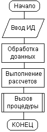
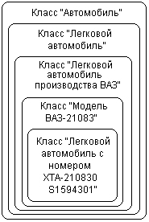
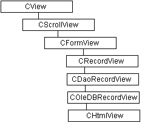
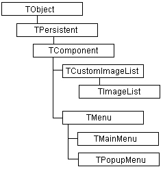
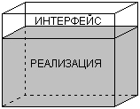
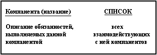
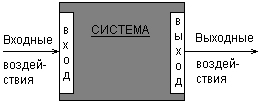

Если попытаться охарактеризовать современный уровень развития компьютерных и информационных технологий, то первое, на что следует обратить внимание — это возрастающая сложность не только отдельных физических и программных компонентов, но и лежащих в основе этих технологий концепций и идей. Кажется, еще совсем недавно профессиональному программисту было достаточно в совершенстве владеть одним-двумя языками программирования, чтобы разрабатывать серьезные программные приложения. Выбор платформы и операционной системы, как правило, не являлся серьезной проблемой. А сопровождение программы, хотя и было сопряжено с объективными трудностями, могло быть реализовано простым добавлением или изменением кода исходной программы.
1.1. Методология процедурно-ориентированного программирования
Появление первых электронных вычислительных машин или компьютеров ознаменовало новый этап в развитии техники вычислений. Казалось, достаточно разработать последовательность элементарных действий, каждое из которых преобразовать в понятные компьютеру инструкции, и любая вычислительная задача может быть решена. Эта идея оказалась настолько жизнеспособной, что долгое время доминировала над всем процессом разработки программ. Появились специальные языки программирования, которые позволили преобразовывать отдельные вычислительные операции в соответствующий программный код.
Основой данной методологии разработки программ являлась процедурная или алгоритмическая организация структуры программного кода. Это было настолько естественно для решения вычислительных задач, что ни у кого не вызывала сомнений целесообразность такого подхода. Исходным понятием этой методологии являлось понятие алгоритма, под которым, в общем случае, понимается некоторое предписание выполнить точно определенную последовательность действий, направленных на достижение заданной цели или решение поставленной задачи. Примерами алгоритмов являются хорошо известные правила нахождения корней квадратного уравнения или корней линейной системы уравнений.
Примечание
Принято считать, что сам термин алгоритм происходит от имени средневекового математика Аль-Хорезми, который в 825 г. описал правила выполнения арифметических действий в десятичной системе счисления.
С этой точки зрения вся история математики тесно связана с разработкой тех или иных алгоритмов решения актуальных для своей эпохи задач. Более того, само понятие алгоритма стало предметом соответствующей теории — теории алгоритмов, которая занимается изучением общих свойств алгоритмов. Со временем содержание этой теории стало настолько абстрактным, что соответствующие результаты понимали только специалисты. Как дань этой традиции какой-то период времени языки программирования назывались алгоритмическими, а первое графическое средство документирования программ получило название блок-схемы алгоритма. Соответствующая система графических обозначений была зафиксирована в ГОСТ 19.701-90, который регламентировал использование условных обозначений в схемах алгоритмов, программ, данных и систем.
Однако потребности практики не всегда требовали установления вычислимости конкретных функций или разрешимости отдельных задач. В языках программирования возникло и закрепилось новое понятие процедуры, которое конкретизировало общее понятие алгоритма применительно к решению задач на компьютерах. Так же, как и алгоритм, процедура представляет собой законченную последовательность действий или операций, направленных на решение отдельной задачи. В языках программирования появилась специальная синтаксическая конструкция, которая получила название процедуры.
Со временем разработка больших программ превратилась в серьезную проблему и потребовала их разбиения на более мелкие фрагменты. Основой для такого разбиения как раз и стала процедурная декомпозиция, при которой отдельные части программы или модули представляли собой совокупность процедур для решения некоторой совокупности задач. Главная особенность процедурного программирования заключается в том, что программа' всегда имеет начало во времени или начальную процедуру (начальный блок) и окончание (конечный блок). При этом вся программа может быть представлена визуально в виде направленной последовательности графических примитивов или блоков (рис. 1.1).
Важным свойством таких программ является необходимость завершения всех действий предшествующей процедуры для начала действий последующей процедуры. Изменение порядка выполнения этих действий даже в пределах одной процедуры потребовало включения в языки программирования специальных условных операторов типа if-then-eise и Goto для реализации ветвления вычислительного процесса в зависимости от промежуточных результатов решения задачи.
Рис. 1.1. Графическое представление программы в виде последовательности процедур
Примечание
Появление и интенсивное использование условных операторов и оператора безусловного перехода стало предметом острых дискуссий среди специалистов по программированию. Дело в том, что бесконтрольное применение в программе оператора безусловного перехода goto способно серьезно осложнить понимание кода. Соответствующие программы стали сравнивать со спагетти, называя их bowl of spaghetti, имея в виду многочисленные переходы от одного фрагмента программы к другому, или, что еще хуже, возврат от конечных операторов программы к ее начальным операторам. Ситуация казалась настолько драматичной, что в литературе зазвучали призывы исключить оператор goto из языков программирования. Именно с этого времени принято считать хорошим стилем программирования — программирование без goto.
Рассмотренные идеи способствовали становлению некоторой системы взглядов на процесс разработки программ и написания программных кодов, которая Получила название методологии структурного программирования. Основой данной методологии является процедурная декомпозиция программной системы и организация отдельных модулей в виде совокупности выполняемых процедур. В рамках данной методологии получило развитие нисходящее проектирование программ или программирование "сверху-вниз". Период наибольшей популярности идей структурного программирования приходится на конец 70-х—начало 80-х годов.
Как вспомогательное средство структуризации программного кода было рекомендовано использование отступов в начале каждой строки, которые должны выделять вложенные циклы и условные операторы. Все это призвано способствовать пониманию или читабельности самой программы. Данное правило со временем было реализовано в современных инструментариях разработки программ. Ниже приводится пример листинга программы на языке Pascal, который иллюстрирует эту особенность написания программ.
Листинг 1.1. Пример фрагмента программы на Pascal, разработанной с использованием правил структурного программирования
Procedure FirstOpt;
Begin
FuncRaz(Free, Rn);
for i:=l to N do
RvarRec[i]:= Rn[i];
FvarRec:= Freс;
Numlt:=0;
Repeat
NumIt:=NumIt+l;
V:= Freс;
for j:=1 to К do
for 1:=1 to M do
begin
S:=0.0;
T:=0.0;
for i:=l to N do
begin
T:=T+sqr(Wl[i,j])*Xpr[i,l];
S:=S+sqr(Wl[i,j])
end;
Zentr[j,l]:=T/S
end;
for j:=1 to К do
for i:=l to N do
begin
S:=0.0;
P:=0.0;
Q:=0.0;
for l:=1 to M do
S:=S+sqr(Xpr[i,l]-Zentr[j,l]);
P:=1.0/S;
end;
Q:=0.0;
D:=0;
for i:=1 to N do
for j:=1 to К do
if Abs(Wl[i,j]-W2[i,j]) >= Eps then D:=l;
for i:=l to N do
for j:=1 to К do
W1[i,j]:=W2[i,j]
Until (D=0)or(NumIt=NumMax)
End;
В этот период основным показателем сложности разработки программ считали ее размер. Вполне серьезно обсуждались такие оценки сложности программ, как количество строк программного кода. Правда, при этом делались некоторые предположения относительно синтаксиса самих строк, которые должны были удовлетворять определенным правилам. Общая трудоемкость разработки программ оценивалась специальной единицей измерения — "человеко-месяц" или "человеко-год". А профессионализм программиста напрямую связывался с количеством строк программного кода, который он мог написать и отладить в течение, скажем, месяца.
Примечание
Сейчас попытки оценить профессионализм программиста количеством строк программного кода могут вызвать лишь улыбку собеседника. Действительно, используя встроенные мастера современных инструментариев разработки (MS Visual C++ или Inprise/Borland Delphi), даже новичок может за считанные секунды последовательным нажатием кнопок диалоговых меню создать работоспособное приложение, содержащее сотни строк программного кода и состоящее из десятка отдельных файлов проекта.
1.2. Методология объектно-ориентированного программирования
Со временем ситуация стала существенно изменяться. Оказалось, что трудоемкость разработки программных приложений на начальных этапах программирования оценивалась значительно ниже реально затрачиваемых усилий, что служило причиной дополнительных расходов и затягивания окончательных сроков готовности программ. В процессе разработки приложений изменялись функциональные требования заказчика, что еще более отдаляло момент окончания работы программистов. Увеличение размеров программ приводило к необходимости привлечения большего числа программистов, что, в свою очередь, потребовало дополнительных ресурсов для организации их согласованной работы.
Но не менее важными оказались качественные изменения, связанные со смещением акцента использования компьютеров. Если в эпоху "больших машин" основными потребителями программного обеспечения были крупные предприятия, компании и учреждения, то позже появились персональные компьютеры и стали повсеместным атрибутом мелкого и среднего бизнеса. Вычислительные и расчетно-алгоритмические задачи в этой области традиционно занимали второстепенное место, а на первый план выступили задачи обработки и манипулирования данными.
Стало очевидным, что традиционные методы процедурного программирования не способны справиться ни с растущей сложностью программ и их разработки, ни с необходимостью повышения их надежности. Во второй половине 80-х годов возникла настоятельная потребность в новой методологии программирования, которая была бы способна решить весь этот комплекс проблем. Такой методологией стало объектно-ориентированное программирование (ООП).
Фундаментальными понятиями ООП являются понятия класса и объекта. При этом под классом понимают некоторую абстракцию совокупности объектов, которые имеют общий набор свойств и обладают одинаковым поведением. Каждый объект в этом случае рассматривается как экземпляр соответствующего класса. Объекты, которые не имеют полностью одинаковых свойств или не обладают одинаковым поведением, по определению, не могут быть отнесены к одному классу.
Примечание
Приведенное выше определение класса является достаточно общим. В последующих главах по мере изучения материала этот термин будет уточняться на основе установления семантических связей с другими понятиями объектно-ориентированного анализа и проектирования.
Важной особенностью классов является возможность их организации в виде некоторой иерархической структуры, которая по внешнему виду напоминает схему классификации понятий формальной логики. В этой связи следует заметить, что каждое понятие в логике имеет некоторый объем и содержание. При этом под объемом понятия понимают все другие мыслимые понятия, для которых исходное понятие может служить определяющей категорией или главной частью. Содержание понятия составляет совокупность всех его признаков или атрибутов, отличающих данное понятие от всех других. В формальной логике имеет место закон обратного отношения: если содержание понятия А содержится в содержании понятия В, то объем понятия В содержится в объеме понятия А.
Иерархия понятий строится следующим образом. В качестве наиболее общего понятия или категории берется понятие, имеющее наибольший объем и, соответственно, наименьшее содержание. Это самый высокий уровень абстракции для данной иерархии. Затем данное общее понятие некоторым образом конкретизируется, тем самым уменьшается его объем и увеличивается содержание. Появляется менее общее понятие, которое на схеме иерархии будет расположено на уровень ниже исходного понятия. Этот процесс конкретизации понятий может быть продолжен до тех пор, пока на самом нижнем уровне не будет получено понятие, дальнейшая конкретизация которого в данном контексте либо невозможна, либо нецелесообразна.
Примерами наиболее общих понятий могут служить такие абстрактные категории, как система, структура, интеллект, информация, сущность, связь, состояние, событие и многие другие. В процессе изучения этих категорий появляются новые особенности их содержания и объема. Именно по этим причинам всегда трудно дать им точное определение. В качестве примеров конкретных понятий можно привести понятие книги, которую читатель держит в руках, или понятие микропроцессора Intel Pentium П-300.
Примечание
Как будет видно из дальнейшего изложения, иерархическая схема организации понятий не тождественна иерархии классов, поскольку взаимосвязи между классами могут иметь и другие качественные особенности. С другой стороны, иерархия понятий является более общей категорией по сравнению с иерархией уровней абстракции классов ООП.
Основными принципами ООП являются наследование, инкапсуляция и полиморфизм. Принцип, в соответствии с которым знание о более общей категории разрешается применять для более узкой категории, называется наследованием. Наследование тесно связано с иерархией классов, которая определяет, какие классы следует считать наиболее абстрактными и общими по отношению к другим классам. При этом, если некоторый более общий или родительский класс (предок) обладает фиксированным набором свойств и поведением, то производный от него класс (потомок) должен содержать этот же набор свойств и поведение, а также дополнительные, которые будут характеризовать уникальность полученного таким образом класса. В этом случае говорят, что производный класс наследует свойства и поведение родительского класса.
Для иллюстрации принципа наследования можно привести следующий пример. Рассмотрим в качестве общего класс "Автомобиль". Данный класс определяется как некоторая абстракция свойств и поведения всех реально существующих автомобилей. При этом свойствами класса "Автомобиль" могут быть такие общие свойства, как наличие двигателя, трансмиссии, колес, рулевого управления. Если в качестве производного класса рассмотреть класс "Легковой автомобиль", то все выделенные выше свойства будут присущи и этому классу. Можно сказать, что класс "Легковой автомобиль" наследует свойства родительского класса "Автомобиль". Однако, кроме перечисленных свойств, класс-потомок будет содержать дополнительные свойства, например такое, как наличие салона с количеством посадочных мест 2—5.
В свою очередь, класс "Легковой автомобиль" способен порождать другие подклассы, которые вполне могут соответствовать, например, моделям конкретных фирм-производителей. Таким образом, можно рассматривать класс "Легковой автомобиль производства ВАЗ". Поскольку Волжский автомобильный завод выпускает несколько моделей автомобилей, одним из производных классов для предыдущего класса может быть конкретная модель автомобиля, например, ВАЗ-21083. Наконец, изготовленный автомобиль имеет уникальный заводской номер, отличающий один автомобиль от другого. Таким номером может быть, например, XTA-210830S1594301. В последнем случае класс будет состоять из единственного объекта или экземпляра, которым будет являться легковой автомобиль производства ВАЗ с указанным выше заводским номером.
Описанная выше информация о соотношении классов в нашем примере обладает одним серьезным недостатком, а именно отсутствием наглядности. В этой связи возникает вопрос: а возможно ли представить иерархию наследования классов в визуальной форме? Традиционно для изображения понятий в формальной логике использовались окружности или прямоугольники. Тогда для рассмотренного примера иерархия порождения классов может быть представлена в виде вложенных прямоугольников, каждый из которых соответствует отдельному классу (рис. 1.2).
Рис. 1.2. Иерархия вложенности классов для примера "Автомобиль"
Появление объектно-ориентированных языков программирования было связано с необходимостью реализации концепции классов и объектов на синтаксическом уровне. С точки зрения ООП класс является дальнейшим расширением структуры (structure) или записи (record). Включение в известные языки программирования С и Pascal классов и некоторых других возможностей привело к появлению соответственно C++ и Object Pascal, которые на сегодня являются наиболее распространенными языками разработки приложений. Распространению C++ и Object Pascal способствовало то обстоятельство, что язык C++ был выбран в качестве базового для программного инструментария MS Visual C++, а язык Object Pascal— для популярного средства быстрой разработки приложений Borland/Inprise Delphi.
За короткий период времени оба инструментария превратились в мощные системы разработки программ с соответствующими библиотеками стандартных классов, содержащих сотни различных свойств и методов. Применительно к среде MS Visual C++ 5/6 такая библиотека имеет специальное название — MFC (Microsoft Foundation Classes), т. е. фундаментальные классы от Microsoft. При этом производные классы наследуют свойства и методы родительских классов. Ниже приводится фрагмент иерархии классов MFC в том виде, как он изображен в соответствующей документации (рис. 1.3).
Рис. 1.3. Фрагмент иерархии классов MFC, используемых в среде программирования MS Visual C++ 5/6
Рис. 1.4. Фрагмент иерархии классов VCU используемых в среде программирования Borland/Inprise Delphi 3-4
Процесс разработки программ в среде Borland/Inprise Delphi также тесно связан с использованием библиотеки стандартных классов — VCL (Visual Component Library) или библиотеки визуальных компонентов. Эта библиотека тоже построена по иерархическому принципу, в соответствии с которым компоненты нижележащих уровней наследуют свойства и методы вышележащих компонентов. Для данного случая также приводится фрагмент иерархии классов VCL (рис. 1.4).
Даже этих простых примеров достаточно, чтобы понять следующий факт. А именно, для одной и той же общей концепции иерархии классов используются совершенно различные графические средства. В первом случае — вложенные прямоугольники, во втором — связные прямоугольники. В действительности различных способов изображения классов предложено гораздо больше, небольшая часть из них будет рассмотрена ниже. Однако уже сейчас важно осознать, что подобную ситуацию следовало бы унифицировать, т. е. использовать для этой цели некоторую единую систему обозначений.
Следующий принцип ООП — инкапсуляция. Этот термин характеризует сокрытие отдельных деталей внутреннего устройства классов от внешних по отношению к нему объектов или пользователей. Действительно, взаимодействующему с классом субъекту или клиенту нет необходимости знать, каким образом реализован тот или иной метод класса, услугами которого он решил воспользоваться. Конкретная реализация присущих классу свойств и методов, которые определяют поведение этого класса, является собственным делом данного класса. Более того, отдельные свойства и методы класса вообще могут быть невидимы за пределами этого класса, что является базовой идеей введения различных категорий видимости для компонентов класса.
Если продолжить рассмотрение примера с классом "Легковой автомобиль", то нетрудно проиллюстрировать инкапсуляцию следующим образом. Основным субъектом, который взаимодействует с этим классом, является водитель. Вполне очевидно, что не каждый водитель в совершенстве знает внутреннее устройство легкового автомобиля. Более того, отдельные детали этого устройства сознательно скрыты в корпусе двигателя или в коробке передач. А в случае нарушения работы автомобиля, являющейся причиной неадекватности его поведения, необходимый ремонт выполняет профессиональный механик.
Инкапсуляция ведет свое происхождение от деления модулей в некоторых языках программирования на две части или секции: интерфейс и реализацию. При этом в интерфейсной секции модуля описываются все объявления функций и процедур, а возможно и типов данных, доступных за пределами данного модуля. Другими словами, указанные процедуры и функции являются способами оказания услуг внешним клиентам. В другой секции модуля, называемой реализацией, содержится программный код, который определяет конкретные способы реализаций объявленных в интерфейсной части процедур и функций.
Принцип разделения модуля на интерфейс и реализацию отражает суть наших представлений об окружающем мире. В интерфейсной части указывается вся информация, необходимая для взаимодействия с любыми другими объектами. Реализация скрывает или маскирует от других объектов все детали, не имеющие отношения к процессу взаимодействия объектов (рис. 1.5).
Рис. 1.5. Иллюстрация сокрытия внутренних деталей реализации методов классов
Примечание
Степень затемнения фона на приведенном выше рисунке имеет более глубокий смысл, чем может показаться на первый взгляд. Если ассоциировать реализацию программного модуля с. водой в аквариуме, то видимость объектов, находящихся в воде, будет зависеть от степени ее чистоты или загрязнения. В ООП существуют различные варианты доступа к свойствам и методам классов, которые получили название видимости свойств и методов. В этом случае использование различных форм видимости для компонентов классов удобно ассоциировать с прозрачностью фона рисунка или видимостью в воде аквариума. Более детальное рассмотрение различных форм видимости приводится в части II книги.
Третьим принципом ООП является полиморфизм. Под полиморфизмом (греч. Poly— много, morfos — форма) понимают свойство некоторых объектов принимать различные внешние формы в зависимости от обстоятельств. Применительно к ООП полиморфизм означает, что действия, выполняемые одноименными методами, могут отличаться в зависимости от того, какому из классов относится тот или иной метод.
Рассмотрим, например, три объекта или класса: двигатель автомобиля, электрический свет в комнате и персональный компьютер. Для каждого из них можно определить операцию "выключить". Однако сущность этой операции будет отличаться для каждого из рассмотренных объектов. Так для двигателя автомобиля вызов метода двигатеяь_автомобиля. выключить о означает прекращение подачи топлива и его остановку. Вызов метода Комната. электрический_ свет. выключить о означает простой щелчок выключателя, после чего комната погрузится в темноту. В последнем случае действие персональный_ компьютер. выключить о может быть причиной потери данных, если выполняется нерегламентированным образом.
Примечание
В рассмотренном выше примере использовалась одна из принятых нотаций в некоторых языках программирования (например, в Object Pascal) для обозначения принадлежности метода тому или иному классу. В соответствии с этой нотацией, вначале указывается имя класса, в котором определен метод, а затем через точку имя самого метода. Если метод определен в некотором подклассе, то должна быть указана вся цепочка классов, начиная с наиболее общего из них. При этом характерным признаком метода является пара скобок, которые используются для указания списка аргументов или формальных параметров данного метода.
В нашем примере для операции выключить () можно определить такие дополнительные параметры, как время выключения, некоторое условие нахождения объекта в предварительно включенном состоянии и пр. Для этого после имени операции указываются скобки, в которых могут быть указаны эти дополнительные параметры или аргументы. В случае отсутствия аргументов считается, что список параметров пуст. Однако скобки все равно записываются и указывают на тот факт, что соответствующее имя является именем операции или метода, в отличие от свойств или атрибутов класса, которые записываются без скобок.
Полиморфизм объектно-ориентированных языков связан с перегрузкой функций, но не тождествен ей. Важно иметь в виду, что имена методов и свойств тесно связаны с классами, в которых они описаны. Это обстоятельство обеспечивает определенную надежность работы программы, поскольку исключает случайное применение метода для решения несвойственной ему задачи.
Широкое распространение методологии ООП оказало влияние на процесс разработки программ. В частности, процедурно-ориентированная декомпозиция программ уступила место объектно-ориентированной декомпозиции, при которой отдельными структурными единицами программы стали являться не процедуры и функции, а классы и объекты с соответствующими свойствами и методами. Как следствие, программа перестала быть последовательностью предопределенных на этапе кодирования действий, а стала событийно-управляемой. Последнее обстоятельство стало доминирующим при разработке широкого круга современных приложений. В этом случае каждая программа представляет собой бесконечный цикл ожидания некоторых заранее определенных событий. Инициаторами событий могут быть другие программы или пользователи. При наступлении отдельного события, например, нажатия клавиши на клавиатуре или щелчка кнопкой мыши, программа выходит из состояния ожидания и реагирует на это событие вполне адекватным образом. Реакция программы при этом тоже связывается с последующими событиями.
Наиболее существенным обстоятельством в развитии методологии ООП явилось осознание того факта, что процесс написания программного кода может быть отделен от процесса проектирования структуры программы. Действительно, до того как начать программирование классов, их свойств и методов, необходимо определить, чем же являются сами эти классы. Более того, нужно дать ответы на такие вопросы, как: сколько и какие классы нужно определить для решения поставленной задачи, какие свойства и методы необходимы для придания классам требуемого поведения, а также установить взаимосвязи между классами.
Эта совокупность задач не столько связана с написанием кода, сколько с общим анализом требований к будущей программе, а также с анализом конкретной предметной области, для которой разрабатывается программа. Все эти обстоятельства привели к появлению специальной методологии, получившей название методологии объектно-ориентированнного анализа и проектирования (ООАП).
1.3. Методология объектно-ориентированного анализа и проектирования
Необходимость анализа предметной области до начала написания программы была осознана давно при разработке масштабных проектов. Процесс разработки баз данных существенно отличается от написания программного кода для решения вычислительной задачи. Главное отличие заключается в том, что при проектировании базы данных возникает необходимость в предварительной разработке концептуальной схемы, которая отражала бы общие взаимосвязи предметной области и особенности организации соответствующей информации. При этом под предметной областью принято понимать ту часть реального мира, которая имеет существенное значение или непосредственное отношение к процессу функционирования программы. Другими словами, предметная область включает в себя только те объекты и взаимосвязи между ними, которые необходимы для описания требований и условий решения некоторой задачи.
Выделение исходных или базовых компонентов предметной области, необходимых для решения той или иной задачи, представляет, в общем случае, нетривиальную проблему. Сложность данной проблемы проявляется в неформальном характере процедур или правил, которые можно применять для этой цели. Более того, такая работа должна выполняться совместно со специалистами или экспертами, хорошо знающими предметную область. Например, если разрабатывается база данных для обслуживания пассажиров крупного аэропорта, то в проектировании концептуальной схемы базы данных должны принимать участие штатные сотрудники данного аэропорта. Эти сотрудники должны хорошо знать весь процесс обслуживания пассажиров или данную предметную область.
Для выделения или идентификации компонентов предметной области было предложено несколько способов и правил. Сам этот процесс получил название концептуализации предметной области. При этом под компонентой понимают некоторую абстрактную единицу, которая обладает функциональностью, т. е. может выполнять определенные действия, связанные с решением поставленных задач. На предварительном этапе концептуализации рекомендуется использовать так называемые CRC-карточки (Component, Responsibility, Collaborator— компонента, обязанность, сотрудники) [1]. Для каждой выделенной компоненты предметной области разрабатывается собственная CRC-карточка (рис. 1.6).
Рис. 1.6. Общий вид CRC-карточки для описания компонентов предметной области
Появление методологии ООАП потребовало, с одной стороны, разработки различных средств концептуализации предметной области, а с другой — соответствующих специалистов, которые владели бы этой методологией. На данном этапе появляется относительно новый тип специалиста, который получил название аналитика или архитектора. Наряду со специалистами по предметной области аналитик участвует в построении концептуальной схемы будущей программы, которая затем преобразуется программистами в код. При этом отдельные компоненты выбираются таким образом, чтобы при последующей разработке их было удобно представить в форме классов и объектов. В этом случае немаловажное значение приобретает и сам язык представления информации о концептуальной схеме предметной области.
Разделение процесса разработки сложных программных приложений на отдельные этапы способствовало становлению концепции жизненного цикла программы. Под жизненным циклом (ЖЦ) программы понимают совокупность взаимосвязанных и следующих во времени этапов, начиная от разработки требований к ней и заканчивая полным отказом от ее использования. Стандарт ISO/IEC 12207, хотя и описывает общую структуру ЖЦ программы, не конкретизирует детали выполнения тех или иных этапов. Согласно принятым взглядам ЖЦ программы состоит из следующих этапов:
На этапе анализа предметной области и .формулировки требований осуществляется определение функций, которые должна выполнять разрабатываемая программа, а также концептуализация предметной области. Эту работу выполняют аналитики совместно со специалистами предметной области. Результатом данного этапа должна являться некоторая концептуальная схема, содержащая описание основных компонентов и тех функций, которые они должны выполнять.
Этап проектирования структуры программы заключается в разработке детальной схемы будущей программы, на которой указываются классы, их свойства и методы, а также различные взаимосвязи между ними. Как правило, на этом этапе могут участвовать в работе аналитики, архитекторы и отдельные квалифицированные программисты. Результатом данного этапа должна стать детализированная схема программы, на которой указываются все классы и взаимосвязи между ними в процессе функционирования программы. Согласно методологии ООАП, именно данная схема должна "служить исходной информацией для написания программного кода.
Этап программирования вряд ли нуждается в уточнении, поскольку является наиболее традиционным для программистов. Появление инструментариев быстрой разработки приложений (Rapid Application Development, RAD) позволило существенно сократить время, и затраты на выполнение этого этапа. Результатом данного этапа является программное приложение, которое обладает требуемой функциональностью и способно решать нужные задачи в конкретной предметной области.
Этапы внедрения и сопровождения программы связаны с необходимостью настройки и конфигурирования среды программы, а также с устранением возникших в процессе ее использования ошибок. Иногда в качестве отдельного этапа выделяют тестирование программы, под которым понимают проверку работоспособности программы на некоторой совокупности исходных данных или при некоторых специальных режимах эксплуатации. Результатом этих этапов является повышение надежности Программного приложения, исключающего возникновение критических ситуаций или нанесение ущерба компании, использующей данное приложение.
Примечание
Рассматривая различные этапы ЖЦ программы, следует отметить одно важное обстоятельство. А именно, если появление RAD-инструментариев позволило существенно сократить сроки этапа программирования, то отсутствие соответствующих средств для первых двух этапов долгое время сдерживало процесс разработки приложений. Развитие методологии ООАП было направлено на автоматизацию второго, а затем и первого этапов ЖЦ программы.
Методология ООАП тесно связана с концепцией автоматизированной разработки программного обеспечения (Computer Aided Software Engineering, CASE). Появление первых CASE-средств было встречено с определенной настороженностью. Со временем появились как восторженные Отзывы об их применении, так и критические оценки их возможностей. Причин для столь противоречивых мнений было несколько. Первая из них заключается в том, что ранние CASE-средства были простой надстройкой над некоторой системой управления базами данных (СУБД). Хотя визуализация процесса разработки концептуальной схемы БД имеет немаловажное значение, она не решает проблем разработки приложений других типов.
Вторая причина имеет более сложную природу, поскольку связана с графической нотацией, реализованной в том или ином CASE-средстве. Если языки программирования имеют строгий синтаксис, то попытки предложить подходящий синтаксис для визуального представления концептуальных схем БД были восприняты далеко неоднозначно. Появилось несколько подходов, которые более подробно будут рассмотрены в главе 2. На этом фоне появление унифицированного языка моделирования (Unified Modeling Language, UML), который ориентирован на решение задач первых двух этапов ЖЦ программ, было воспринято с большим оптимизмом всем сообществом корпоративных программистов.
Примечание
Аббревиатура UML допускает соответствующий перевод и последующее сокращение, но ввиду неудобочитаемости получающегося "УЯМ" было решено использовать исходный термин на всем протяжении книги. Частично это можно объяснить уже сложившейся традицией применения оригинальных терминов, таких как CASE, RAD, DLL, ISDN и целого ряда других.
Последнее, на что следует обратить внимание, это осознание необходимости построения предварительной модели программной системы, которую, согласно современным концепциям ООАП, следует считать результатом первых этапов ЖЦ программы. Поскольку язык UML даже в своем названии имеет отношение к моделированию, следует дополнительно остановиться на целом ряде достаточно важных вопросов. Таким образом, мы переходим к теме, которая традиционно не рассматривается в изданиях по ООАП, но имеющая самое прямое отношение к процессу построения моделей и, собственно, моделированию. Речь идет о методологии системного анализа и системного моделирования.
1.4. Методология системного анализа и системного моделирования
Системный анализ как научное направление имеет более давнюю историю, чем ООП и ООАП, и собственный предмет исследования. Центральным понятием системного анализа является понятие системы, под которой понимается совокупность объектов, компонентов или элементов произвольной природы, образующих некоторую целостность. Определяющей предпосылкой выделения некоторой совокупности как системы является возникновение у нее новых свойств, которых не имеют составляющие ее элементы. Примеров систем можно привести достаточно много — это персональный компьютер, автомобиль, человек, биосфера, программа и др. Более ортодоксальная точка зрения предполагает, что все окружающие нас предметы являются системами.
Важнейшими характеристиками любой системы являются ее структура и процесс функционирования. Под структурой системы понимают устойчивую во времени совокупность взаимосвязей между ее элементами или компонентами. Именно структура связывает воедино все элементы и препятствует распаду системы на отдельные компоненты. Структура системы может отражать самые различные взаимосвязи, в том числе и вложенность элементов одной системы в другую. В этом случае принято называть более мелкую или вложенную систему подсистемой, а более крупную — метасистемой.
Процесс функционирования системы тесно связан с изменением ее свойств или поведения во времени. При этом важной характеристикой системы является ее состояние, под которым понимается совокупность свойств или признаков, которые в каждый момент времени отражают наиболее существенные особенности поведения системы.
Рассмотрим следующий пример. В качестве системы представим себе "Автомобиль". Для этого случая система охлаждения двигателя будет являться подсистемой "Автомобиля". С одной стороны, двигатель является элементом системы "Автомобиль". С другой стороны, двигатель сам является системой, состоящей из отдельных компонентов, таких как цилиндры, свечи зажигания и др. Поэтому система "Двигатель" также будет являться подсистемой системы "Автомобиль".
Структура системы "Автомобиль" может быть описана с разных точек зрения. Наиболее общее представление о структуре этой системы дает механическая схема устройства того или иного автомобиля. Взаимодействие элементов в этом случае носит механический характер. Состояние автомобиля можно рассматривать также с различных точек зрения, наиболее общей из которых является характеристика автомобиля как исправного или неисправного. Очевидно, что каждое из этих состояний в отдельных ситуациях может быть детализировано. Например, состояние "неисправный" может быть конкретизировано в состояния "неисправность двигателя", "неисправность аккумулятора", "отсутствие подачи топлива" и пр. Важно иметь четкое представление, что подобная детализация должна быть адекватна решаемой задаче.
Процесс функционирования системы отражает поведение системы во времени и может быть представлен как последовательное изменение ее состояний: Если система изменяет одно свое состояние на другое, то принято говорить, что система переходит из одного состояния в другое. Совокупность признаков или условий изменения состояний системы в этом случае называется переходом. Для системы с дискретными состояниями процесс функционирования может быть представлен в виде последовательности состояний с соответствующими переходами. Более точное графическое описание процесса функционирования систем будет дано в главе 2.
Методология системного анализа служит концептуальной основой системно-ориентированной декомпозиции предметной области. В этом случае исходными компонентами концептуализации являются системы и взаимосвязи между ними. При этом понятие системы является более общим, чем понятия классов и объектов в ООАП. Результатом системного анализа является построение некоторой модели системы или предметной области.
Понятие модели столь широко используется в повседневной жизни, что приобрело очень много смысловых оттенков. Это и "Дом моделей" известного кутюрье, и модель престижной марки автомобиля, и модель политического руководства, и математическая модель колебаний маятника. Применительно к программным системам нас будет интересовать только то понятие модели, которое используется в системном анализе. А именно, под моделью будем понимать некоторое представление о системе, отражающее наиболее существенные закономерности ее структуры и процесса функционирования и зафиксированное на некотором языке или в другой форме.
Примеров моделей можно привести достаточно много. Например, аэродинамическая модель гоночного автомобиля или проектируемого самолета, модель ракетного двигателя, модель колебательной .системы, модель системы электроснабжения региона, модель избирательной компании и др.
Общим свойством всех моделей является их подобие оригинальной системе или системе-оригиналу. Важность построения моделей заключается в возможности их использования для получения информации о свойствах или поведении системы-оригинала. При этом процесс построения и последующего применения моделей для получения информации о системе-оригинале получил название моделирование.
Примечание
Термин "моделирование" имеет довольно много смысловых оттенков, например, моделирование одежды или моделирование прически. Не отрицая важности этих сфер творчества, следует отметить, "что все эти аспекты моделирования лежат за пределами книги. Рассмотрение особенностей языка UML связано с вопросами логического или информационного моделирования систем.
Наиболее общей моделью системы является так называемая модель "черного ящика". В этом случае система представляется в виде прямоугольника, внутреннее устройство которого скрыто от аналитика или неизвестно. Однако система не является полностью изолированной от внешней среды, поскольку последняя оказывает на систему некоторые информационные или материальные воздействия. Такие воздействия получили название входных воздействий. В свою очередь, система также оказывает на среду или другие системы определенные информационные или материальные воздействия, которые получили название выходных воздействий. Графически данная модель может быть изображена следующим образом (рис. 1.7).
Рис. 1.7. Графическое изображение модели системы в виде "черного ящика"
Ценность моделей, подобных модели "черного ящика", весьма условна. Невольно может возникнуть ассоциация с "Черным квадратом". Однако если оценка изобразительных особенностей последнего не входит в задачи системного анализа, то общая модель системы содержит некоторую важную инфомацию о функциональных особенностях данной системы, которые дают представление о ее поведении. Действительно, кроме самой общей информации о том, на какие воздействия реагирует система, и как проявляется эта реакция на окружающие объекты и системы, другой информации мы получить не можем. В рамках системного анализа разработаны определенные методологические средства, позволяющие выполнить дальнейшую конкретизацию общей модели системы. Некоторые из графических средств представления моделей систем будут рассмотрены в главе 2.
Процесс разработки адекватных моделей и их последующего конструктивного применения требует не только знания общей методологии системного анализа, но и наличия соответствующих изобразительных средств или языков для фиксации результатов моделирования и их документирования. Очевидно, что естественный язык не вполне подходит для этой цели, поскольку обладает неоднозначностью и неопределенностью. Для построения моделей были разработаны достаточно серьезные теоретические методы, основанные на развитии математических и логических средств моделирования, а также предложены различные формальные и графические нотации, отражающие специфику решаемых задач. Важно представлять, что унификация любого языка моделирования тесно связана с методологией системного моделирования, т. е. с системой воззрений и принципов рассмотрения сложных явлений и объектов как моделей сложных систем.
Сложность системы и, соответственно, ее модели может быть рассмотрена с различных точек зрения. Прежде всего, можно выделить сложность структуры системы, которая характеризуется количеством элементов системы и различными типами взаимосвязей между этими элементами. Если количество элементов превышает некоторое пороговое значение, которое не является строго фиксированным, то такая система может быть названа сложной. Например, если программная СУБД насчитывает более 100 отдельных форм ввода и вывода информации, то многие программисты сочтут ее сложной. Транспортная система современных мегаполисов также может служить примером сложной системы.
Вторым аспектом сложности является сложность процесса функционирования системы. Это может быть связано как с непредсказуемым характером поведения системы, так и невозможностью формального представления правил преобразования входных воздействий в выходные. В качестве примеров сложных программных систем можно привести современные операционные системы, которым присущи черты сложности как структуры, так и поведения.
| Каталог | Индекс раздела | Оглавление |